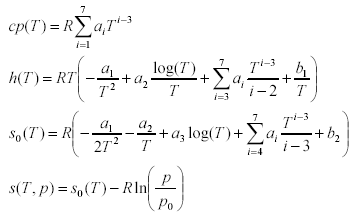

DataRecordCoefficient data record for properties of ideal gases based on NASA source |
|
Information
This information is part of the Modelica Standard Library maintained by the Modelica Association.
This data record contains the coefficients for the ideal gas equations according to:
McBride B.J., Zehe M.J., and Gordon S. (2002): NASA Glenn Coefficients for Calculating Thermodynamic Properties of Individual Species. NASA report TP-2002-211556
The equations have the following structure:
The polynomials for h(T) and s0(T) are derived via integration from the one for cp(T) and contain the integration constants b1, b2 that define the reference specific enthalpy and entropy. For entropy differences the reference pressure p0 is arbitrary, but not for absolute entropies. It is chosen as 1 standard atmosphere (101325 Pa).
For most gases, the region of validity is from 200 K to 6000 K. The equations are split into two regions that are separated by Tlimit (usually 1000 K). In both regions the gas is described by the data above. The two branches are continuous and in most gases also differentiable at Tlimit.